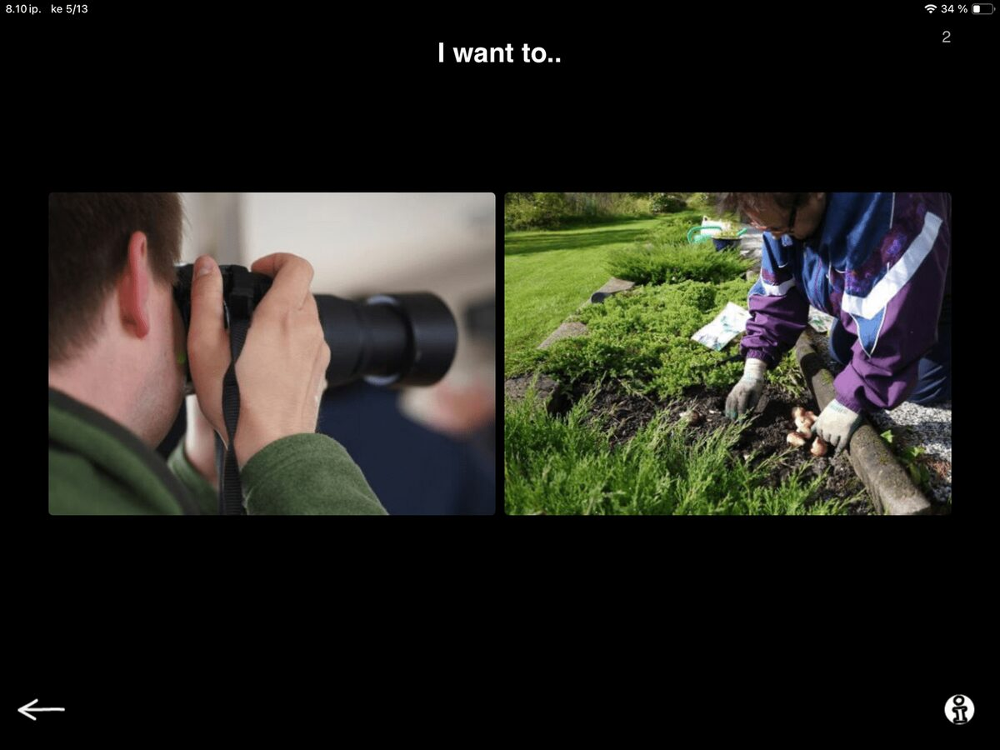
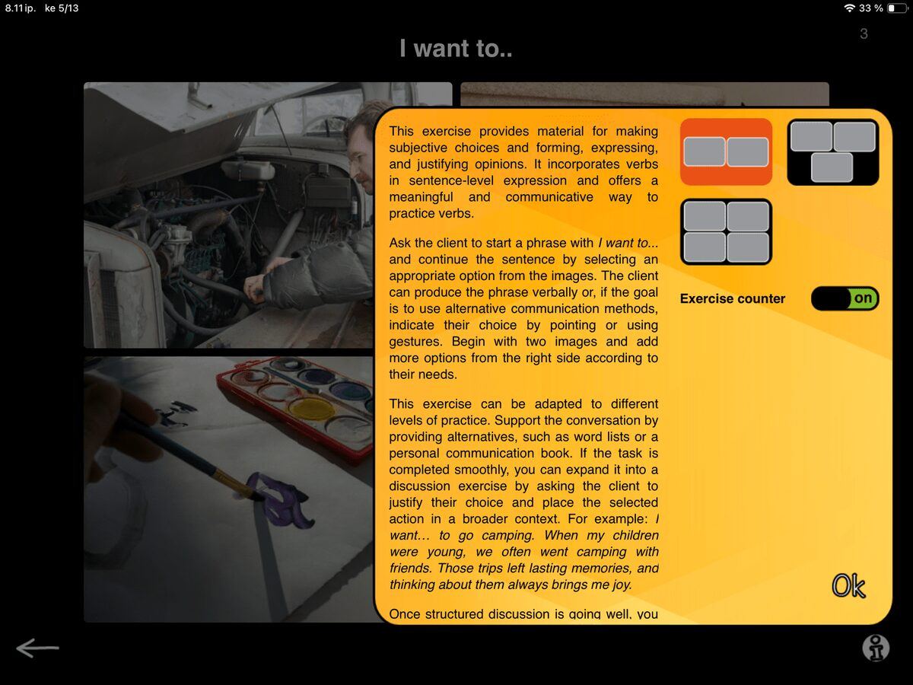
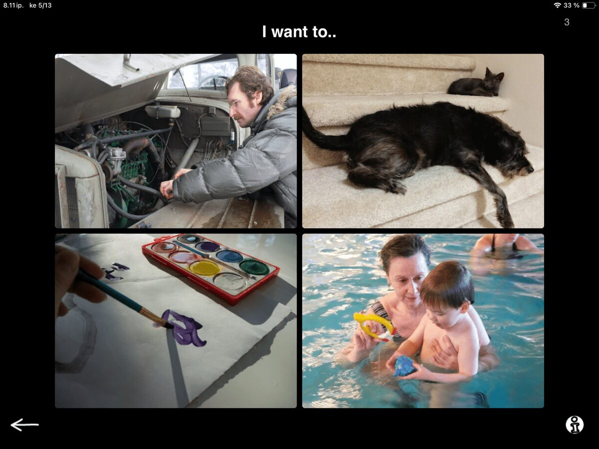

Next task in our SanapsisPro Production category is a task called I want to… This task has two to four action pictures on screen and a prompt that says “I want to…”

Hmm. It seems a lot like the Naming - actions exercise we talked about in the previous post. So what is going on? Actually, quite a bit! In this task, you ask the client to:
Examine the pictures
Determine the action taking place
Select the one they prefer
Start the phrase
Complete it with their preferred action word or phrase.

In the example shown here, the client may just looove gardening and be very clear on the selection they make. The answer becomes “I want to… work in the garden.”
A different client might not enjoy gardening, but they are not too keen on photography either. They end up selecting the image for taking photos through the process of elimination. “I absolutely do not like working with dirt, but I guess taking photos is not that bad. So, I would prefer the camera.” The answer becomes: “I want to… take photos.” Both are excellent answers!
Completing the task requires a vast array of useful skills: actively working on making a choice, formulating and expressing an opinion, and using verbs in sentence-level expression that is rooted in their preferences. And very importantly, thinking and expressing what they like to do. A meaningful and communicative way to work on action words; not as isolated vocabulary, but as part of personal expression.
As clinicians know, many people with aphasia experience difficulties with initiation. The difficulty may not be limited to finding the right word or initiating speech. It may also include initiating the whole action arc: thinking about preferences, independently making a selection based on those preferences, shifting from looking to expression, and generating and sharing required information.
This task format provides scaffolding for the whole process of generating informative expression. The beginning of the sentence is already there to prompt you. What do I like to do? Visual options provide ideas and a limited number of choices, reducing the pressure and overwhelm of initiating an idea from scratch. The task creates a small, supported bridge that links personal experience and intent to sentence formulation. Nothing more powerful than that!


When the task goes smoothly, it naturally grows into a conversation exercise. When they select, for example: “I want to work on my car,” ask them to tell you more. Beyond the rather abstract question “Why?” or “Tell me more”, you can continue by asking: Have you always enjoyed working on cars? Where did you learn? Do you have a specific memory or a story related to fixing a car?
Now, we are not just drilling vocabulary verbs. We are working on personal, meaningful information, preferences, opinions, memory, narrative language, and supported conversation. Sometimes communication starts with a small nudge of finding a way to express: I want to…. And sometimes that is all you need.
Need variation? You can adjust the number of images on screen in task settings. Two is a good starting point. As your client becomes more familiar with the concept, you can introduce more images for added complexity.